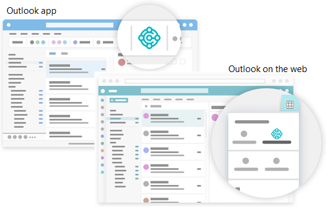
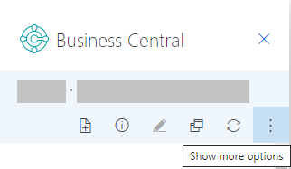
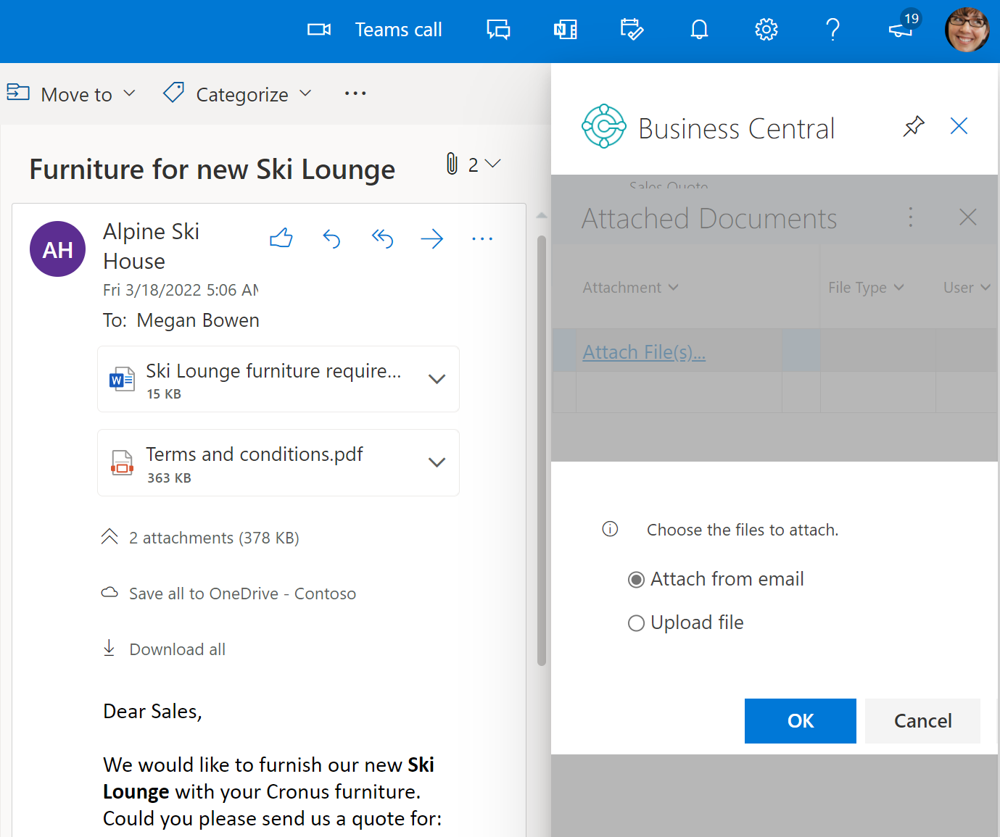

Business Central als Posteingang für Ihr Unternehmen in Outlook verwenden
Business Central bietet ein Add-In, mit dem Sie die geschäftlichen Interaktionen mit Ihren Kunden und Kreditoren direkt in Microsoft Outlook verwalten können. Mit dem Business Central-Add-in für Outlook können Sie Finanzdaten zu Kunden und Kreditoren einsehen und Finanzbelege wie Angebote und Rechnungen erstellen und versenden.
Das Add-In Business Central besteht aus zwei separaten Add-Ins, die die folgenden Funktionalitäten bieten:
Contact Insights
Mit diesem Add-In können Sie Business Central Kunden- oder Kreditor-Informationen in Outlook-E-Mails und Kalenderterminen nachschlagen. Außerdem können Sie damit Business Central-Geschäftsdokumente erstellen und an einen Kontakt senden, z.B. ein Verkaufsangebot oder eine Rechnung.
Beleg-Ansicht
Wenn ein Geschäftsdokument in einer E-Mail versendet wird, stellt das Add-In einen direkten Link von der E-Mail zu dem eigentlichen Geschäftsdokument in Business Central her.
Erste Schritte
Als Erstes müssen Sie das Business Central-Add-In in Outlook installieren. Möglicherweise hat Ihr Administrator das Add-in bereits für Sie installiert. Wenn Sie sich also nicht sicher sind, fragen Sie Ihren Administrator oder lesen Sie den nächsten Schritt, um zu überprüfen, ob es installiert ist.
Wenn das Add-In nicht für Sie installiert wurde, lesen Sie Installieren Sie das Add-In für Ihren eigenen Gebrauch.
Wenn das Add-In installiert ist, können Sie auf das Business Central Add-In von jeder neuen oder bestehenden E-Mail Nachricht oder jedem Kalendertermin in Outlook aus zugreifen.
Beginnen Sie damit, sich bei Outlook anzumelden und eine E-Mail-Nachricht zu öffnen. Wenn Sie dann die Outlook App verwenden, gehen Sie zum Menüband und suchen Sie nach Business Central. Oder wählen Sie bei Verwendung von Outlook im Web oben in der E-Mail-Nachricht Apps > Business Central aus, oder gehen Sie zu den weiteren Aktionen Schaltfläche enthält.

Wenn Sie das Add-In selbst installiert haben und sich für eine Beispiel-E-Mail entschieden haben, suchen Sie in Ihrem Posteingang nach der Willkommens-E-Mail. Diese E-Mail enthält Informationen, die Ihnen die ersten Schritte erleichtern.
Wenn Sie das Add-In zum ersten Mal verwenden, werden Sie im Add-In-Fenster Business Central möglicherweise aufgefordert, sich anzumelden. Wählen Sie in diesem Fall Jetzt anmelden und folgen Sie den Anweisungen auf dem Bildschirm, um sich bei Business Central mit Ihrem Konto anzumelden.
Tipp
Wenn Sie das neue Outlook im Web verwenden, können Sie Business Central anheften, sodass es immer sofort sichtbar ist, anstatt zur Schaltfläche „Weitere Aktionen“ gehen zu müssen. So können Sie bequem die Contact Insights einsehen, während Sie durch verschiedene E-Mails blättern.
Weitere Informationen finden Sie unter Add-Ins in Outlook im Web verwenden.
Arbeiten Sie mit Kontakten und Belegen mit dem Contact Insights-Add-in
Angenommen Sie erhalten eine E-Mail von einem Debitor, der für einige Artikel ein Angebot möchte. Direkt in Outlook öffnen Sie das Business Central-Add-In öffnen, das den Sender als Debitoren identifiziert und die Debitorenkarte für dieses Unternehmen öffnet. Auf diesem Dashboard sehen Sie die Übersichtsinformationen für den Kunden und zeigen Detailinformationen zu bestimmten Belegen an. Sie können sich auch die Verkaufshistorie für den Debitor anzeigen lassen. Wenn es ein neuer Kontakt ist, können Sie ihn als neuen Debitor in Outlook erstellen in Business Central ohne Outlook zu verlassen.
Im Add-In können Sie ein Verkaufsangebot erstellen und es diesem Debitoren zusenden, ohne Outlook zu verlassen. Alle Informationen, die Sie zum Versenden des Verkaufsangebots benötigen, sind in Ihrem Geschäftseingang in Outlook verfügbar. Sobald Sie die Daten eingegeben haben, posten Sie das Angebot und versenden es per E-Mail. Business Central erstellt eine .PDF-Datei mit dem Verkaufsangebot und fügt sie der E-Mail-Nachricht hinzu, deren Entwurf Sie im Add-In erstellt haben.
Möchten Sie eine E-Mail von einem Kreditor erhalten, können Sie das Add-In verwenden, um mit Kreditoren und Einkaufsrechnungen zu arbeiten.
Manchmal möchten Sie mehr Felder sehen, als im Add-In angezeigt werden, z.B.wenn Sie Zeilen in einer Rechnung ausfüllen möchten. Um Ihnen mehr Platz zum Arbeiten zu geben, können Sie das Add-In in einer separaten Seite aufklappen. Es ist immer noch ein Teil von Outlook, aber Sie haben mehr Platz. Wenn Sie Daten für das Dokument in der Popup-Ansicht eingeben, werden die Änderungen automatisch gespeichert. Die folgenden Abschnitte führen Sie durch einige grundlegende Aufgaben, um Ihnen ein allgemeines Verständnis für die Verwendung zu vermitteln.
Tipp
Die Aufgaben erläutern, wie Sie das Add-In aus einer E-Mail-Nachricht heraus verwenden können. Aber Sie können dasselbe auch von einem Kalendertermin in Outlook aus tun.
Nachschlagen eines Geschäftskontakts beim Verfassen einer E-Mail
- Erstellen Sie eine neue E-Mail-Nachricht.
- Gehen Sie im Menüband auf Business Central und wählen Sie Contact Insights. Oder wählen Sie bei Verwendung von Outlook im Web oben in der Nachricht Apps > Business Central aus, > Contact Insights.
In dem sich öffnenden Business Central Add-In-Fenster suchen Sie den gewünschten Kontakt und wählen ihn aus.
Eine Übersicht des Kontakts wird in dem Fenster angezeigt und der Kontakt wird in der An Zeile der E-Mail hinzugefügt.
Anzeigen und Ändern der Kontaktdetails oder Wechseln der Firma
Die Aktionsleiste am oberen Rand des Add-In-Fensters Business Central enthält mehrere Aktionen, mit denen Sie die Details des Kontakts einsehen und ändern können.

So können Sie beispielsweise die vollständigen Kontaktdetails öffnen, wie Sie sie in Business Central sehen würden. Wenn Sie mit mehr als einer Business Central-Firma arbeiten, können Sie ganz einfach zwischen den Firmen wechseln.
Eingehende Belege verfolgen
Vielleicht verwenden Sie die Liste Eingehende Belege in Business Central, um Belege zur Verarbeitung zu verfolgen, die Ihnen von Einkäufern zugeschickt werden, z.B. eine Einkaufsrechnung, die bezahlt werden muss. In diesem Fall können Sie Datensätze für Eingehende Belege ganz einfach über das Outlook-Add-In erstellen und die E-Mail-Anhänge hinzufügen.
Wenn Sie eine E-Mail von einem Kreditor erhalten, die einen Anhang enthält, wählen Sie das Symbol Business Central > Contact Insights.
In der Aktionsleiste des Add-Ins die Option Weitere Aktionen anzeigen und dann die Option Senden an Eingehende Belege... auswählen aus.
Neues Dokument erstellen und an einen Kontakt senden
- Wählen Sie im Menüband oder am unteren Rand der Nachricht Business Central > Neu, und wählen Sie dann die Art des Belegs, den Sie erstellen möchten, z.B. Verkaufsangebot.
- Nehmen Sie die Änderungen an dem Beleg im Bereich Business Central Add-In vor.
- Wenn der Beleg zum Versenden an den Kontakt bereit ist, wählen Sie in der Aktionsleiste Weitere Aktionen anzeigen und dann die Aktion Senden per E-Mail.
Dateien an Datensätze anhängen
Ihr E-Mail-Posteingang dient oft als Quelle für eingehende Dateien, die Workflows initiieren oder entsperren. Dateien können Dinge wie PDF-Rechnungszahlungen, Fotos von Waren oder Anforderungen in einem Word-Dokument enthalten. Wenn Sie in Outlook mit Business Central-Datensätzen wie Kreditoren, Debitoren, Eingangsrechnungen oder Verkaufsaufträgen arbeiten, können Sie diese Dateien an die Datensätze anhängen.
Es gibt mehrere Möglichkeiten, wie Sie Dateien anhängen können. Eine Möglichkeit besteht darin, Dateien von Ihrem Gerät hochzuladen. Die andere Möglichkeit ist das Hochladen von Dateien, die an eine E-Mail angehängt sind. Angenommen, Sie erhalten eine E-Mail mit Dateien von einem Kontakt. Das Add-In zeigt automatisch den Kontaktdatensatz an, der mit dem E-Mail-Absender übereinstimmt. Von dort aus können Sie zu einem Dokument für den Kontakt navigieren, z. B. zum letzten Kundenauftrag. Sobald Sie die Bestellung identifiziert haben, auf die sich die E-Mail bezieht, können Sie die Dateien aus der E-Mail schnell in diese Bestellung hochladen.

Nachdem eine Datei angehängt wurde, können Kollegen die Datei sofort von der Anhänge Infobox in einem ihrer Business Central-Clients herunterladen und anzeigen. Oder sie können die Datei in OneDrive öffnen, um sie für ihre Abteilung freizugeben und zusammenzuarbeiten.
So hängen Sie eine Datei an
- Öffnen Sie die E-Mail öffnen, auswählen Business Central > Contact Insights.
Wählen Sie in der Aktionsleiste des Add-Ins Weitere Aktionen anzeigen > Anhänge aus.
Die Angehängte Dokumente-Seite wird geöffnet, um alle Dokumente aufzulisten, die bereits an den Datensatz angehängt sind.
Wählen Sie Angehängte Anhänge... und dann eine der folgenden Optionen aus:
- Wählen Sie Aus E-Mail anhängen aus, um alle oder die ausgewählten Dateien hochzuladen, die an die E-Mail angehängt sind.
- Wählen Sie Aus Datei hochladen aus, um eine oder mehrere Dateien von Ihrem Gerät hochzuladen.
Hinweis
Sie können nicht an alle Datensätze Dateien anhängen. Diese Funktion ist für Datensätze verfügbar, die die Infobox Anhänge verwenden, z. B. Kreditor, Debitor, Einkaufsrechnung oder Verkaufsauftrag.
Anzeigen eines Belegs aus einer E-Mail mit dem Add-In Dokumentenansicht
Unabhängig davon, ob es sich um eine gesendete oder empfangene E-Mail handelt, können Sie jeden Business Central-Beleg, wie z.B. ein Verkaufsangebot, direkt in Outlook anzeigen. Von dort aus können Sie Änderungen vornehmen und zu verwandten Informationen navigieren —, genauso wie Sie es von Business Central aus tun würden.
Wenn Sie die Outlook App verwenden, wählen Sie einfach Dokumentenlink am Anfang der Nachricht. Wenn Sie Outlook im Internet verwenden, suchen Sie in der Nachricht nach dem Link zu einem Beleg. Der Text des Referenzlinks enthält die Belegnummer, die auf der in Business Central verwendeten Zahlenreihe basiert. Der Link für ein Verkaufsangebot würde zum Beispiel so aussehen: Sales Quote S-QUO1000.
Tipp
Ab dem 1. Veröffentlichungszyklus 2022 werden Dokumente in einem neuen Browserfenster mit allen Funktionen geöffnet, die Sie von Business Central kennen. Sie können von einem Dokument zu einer Liste und wieder zurück navigieren, Listen in Excel öffnen, Dokumente zum Drucken senden und verwandte Berichte ausführen oder in der Vorschau anzeigen. Es stehen auch alle vertrauten Tastenkombinationen direkt dort zur Verfügung, wenn Sie Dokumente aus Outlook öffnen.
Siehe auch
Bereitschaft für die Geschäftsabwicklung
Abrufen von Business Central auf meinem mobilen Gerät
Dokumente per E-Mail versenden
Finanzen
Verkauf
Einkauf
Mindestanforderungen für die Verwendung von Outlook
Add-Ins in Outlook im Internet verwenden
Kostenlose E-Learning-Module für Business Central finden Sie hier